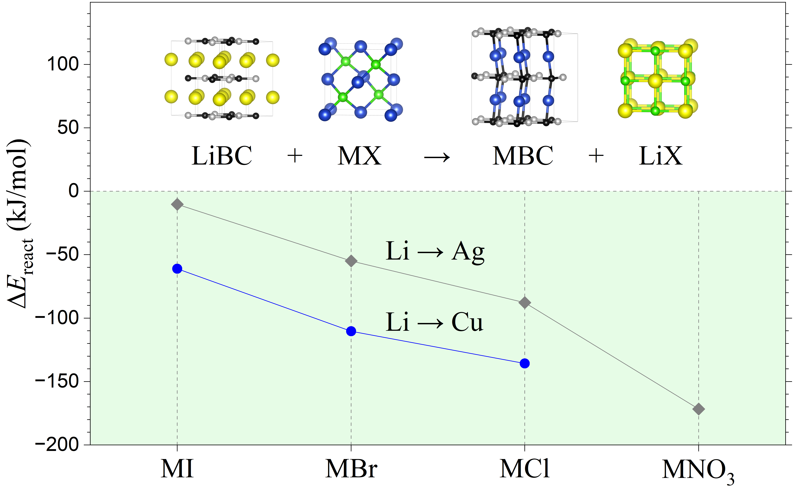
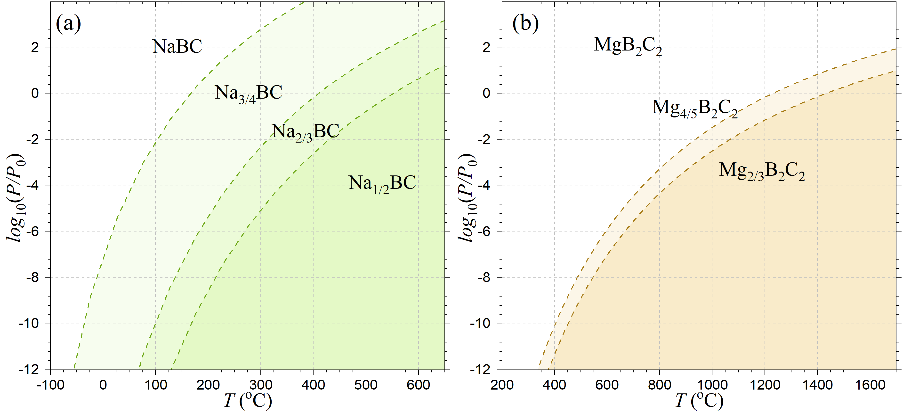
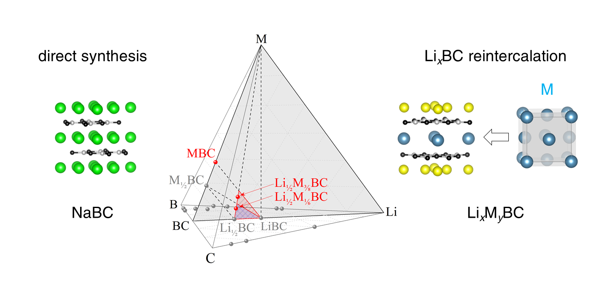
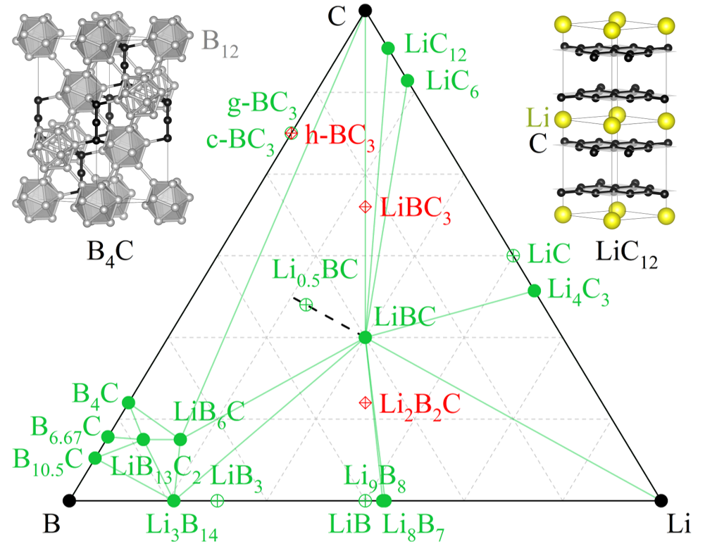
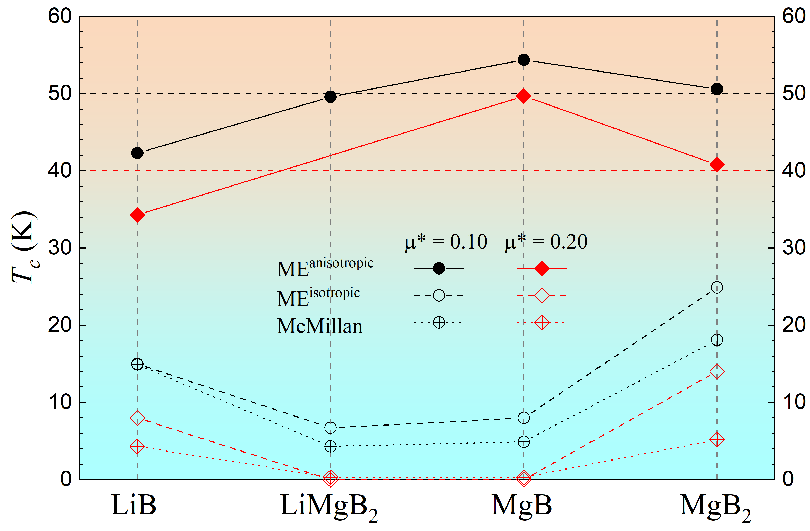

Charlsey Tomassetti
Ph.D. in Physics
Binghamton University
Expert in the development and application of first-principles electronic structure methods for modeling structural, electronic, and superconducting properties of materials at the atomic scale.
Research Interests
- First-principles electronic structure methods (DFT and beyond)
- Ab initio modeling of superconductors and correlated materials
- Computational design of catalysts and nanomaterials
- Compound and crystal structure prediction
- Machine learning interatomic potentials
- Evolutionary algorithms for structure optimization
- Electronic, transport, and superconducting properties of materials
Skills
Materials Modelling Softwares
Programming & Tools
Python Libraries
Awards
Ina C. and James D. Brownridge Physics Student Excellence Award (2026)
Honoring physics students at Binghamton University who have academic promise and who are working on a compelling research project.
Ph.D. in Physics
Binghamton University (2020–2026)
Focus: Materials Science / Computational Physics
Advisor & Co-supervisor:
- Elena R. Margine
- Alexey Kolmogorov
Dissertation: Ab initio design of high-temperature ambient-pressure superconductors accessible through soft chemical reactions Download
Grants, Sponsorships & Funding:
- DCOMP Travel Award, American Physical Society (2024)
- Graduate School Travel Grant, Binghamton University (2022, 2025)
- Travel Support Grant, 2022 School on Electron-Phonon Physics from First Principles (2022)
- Departmental Teaching Assistantship, Binghamton University
- NSF-supported research assistantship (selected projects)
B.S. in Physics
Binghamton University (2016–2020)
Honors: Magna Cum Laude, President's Honors, Dean’s List (multiple semesters), Member of Scholars Program
Key Coursework:
- Quantum Mechanics I & II
- Classical Mechanics
- Electromagnetism
- Statistical Mechanics
B.A. in English Literature and Creative Writing
Binghamton University (2016–2020)
Key skills: Narrative structure, character development, dialogue construction, descriptive language, voice and tone control, plot development and pacing
Abstract
Hole-doping of covalent materials has long served as a blueprint for designing conventional high-Tc superconductors, but thermodynamic constraints severely limit the space of realizable compounds. Our ab initio results indicate that metastable AgxBC and CuxBC phases can be accessed via standard topochemical ion exchange reactions starting from LixBC precursors. Unlike all known stoichiometric layered metal borocarbides, the predicted AgBC and CuBC derivatives, comprising honeycomb layers bridged by dumbbells, are metallic rather than semiconducting. Anisotropic Migdal–Eliashberg analysis reveals that intrinsically hole-doped AgBC exhibits a unique combination of electronic and vibrational features to exhibit two-gap superconductivity above 50 K.

Abstract
We employ ab initio modeling to investigate the possibility of attaining high-temperature conventional superconductivity in ambient-pressure materials based on the known MgB2C2 and recently proposed thermodynamically stable NaBC ternary compounds. The constructed (T,PM) phase diagrams (M = Mg or Na) indicate that these layered metal borocarbides can be hole doped via thermal deintercalation that has been successfully used in previous experiments to produce Li1>x≳0.5BC samples. The relatively low temperature threshold required to trigger NaBC desodiation may help prevent the formation of defects shown recently to be detrimental to the electron-phonon coupling in the delithiated LiBC analog. According to our numerical solutions of the anisotropic full-bandwidth Migdal-Eliashberg equations, the proposed MgxB2C2 and NaxBC materials exhibit superconducting critical temperatures between 43 K and 84 K. At the same time, we demonstrate that buckling of defect-free honeycomb BC layers, favored in heavily doped NaxBC compounds, can substantially reduce or effectively suppress the materials' potential for MgB2-type superconductivity.

Abstract
Delithiation of the known layered LiBC compound was predicted to induce conventional superconductivity at liquid nitrogen temperatures but extensive experimental work over the past two decades has detected no signs of the expected superconducting transition. Using a combination of first-principles stability analysis and anisotropic Migdal–Eliashberg formalism, we have investigated possible LixBC morphologies and established what particular transformations of the planar honeycomb BC layers are detrimental to the materials superconductivity. We propose that LixBC reintercalation with select alkali and alkaline earth metals could lead to synthesis of otherwise inaccessible metastable LixMyBC superconductors with critical temperatures (Tc) up to 73 K. The large-scale exploration of metal borocarbides has revealed that NaBC and Li1/2NayBC layered phases are likely true ground states at low temperatures. The findings indicate that this compositional space may host overlooked synthesizable compounds with potential to break the Tc record for conventional superconductivity in ambient-pressure materials.

Abstract
Prediction of high-Tc superconductivity in hole-doped LixBC two decades ago has brought about an extensive effort to synthesize new materials with honeycomb B–C layers, but the thermodynamic stability of Li–B–C compounds remains largely unexplored. In this study, we use density functional theory to characterize well-established and recently reported Li–B–C phases. Our calculation of the Li chemical potential in LixBC helps estimate the (T,P) conditions required for delithiation of the LiBC parent material, while examination of B–C phases helps rationalize the observation of metastable BC3 polymorphs with honeycomb and diamond-like morphologies. At the same time, we demonstrate that recently reported BC3, LiBC3, and Li2B2C phases with new crystal structures are both dynamically and thermodynamically unstable. With a combination of evolutionary optimization and rational design, we identify considerably more natural and favorable Li2B2C configurations that, nevertheless, remain above the thermodynamic stability threshold.

Abstract
LiB, a predicted layered compound analogous to the MgB2 superconductor, has been recently synthesized via cold compression and quenched to ambient pressure, yet its superconducting properties have not been measured. According to prior isotropic superconductivity calculations, the critical temperature (Tc) was expected to be only 10–15 K. Using the anisotropic Migdal-Eliashberg formalism, we show that the Tc may actually exceed 32 K. Our analysis of the contribution from different electronic states helps explain the detrimental effect of pressure and doping on the compound's superconducting properties. In the search for related superconductors, we screened Li-Mg-B binary and ternary layered materials and found metastable phases with Tc close to or even 10–20% above the record 39 K value in MgB2. Our reexamination of the Li-B binary phase stability reveals a possible route to synthesize the LiB superconductor at lower pressures readily achievable in multianvil cells.

Math Tutor
Delivered targeted mathematics instruction to incoming college students as part of an intensive preparatory program designed to strengthen quantitative readiness and academic transition.
- Instructed 30+ students in algebra and pre-algebra through one-on-one and small-group sessions
- Designed adaptive lesson plans based on diagnostic assessment of student skill levels
- Applied evidence-based teaching strategies to improve conceptual understanding and retention
- Fostered problem-solving skills, mathematical reasoning, and independent study habits
- Contributed to improved student preparedness for entry-level college mathematics coursework
Volunteer — Physics Outreach Project
Engaged elementary school students in foundational physics concepts through interactive demonstrations designed to encourage early interest in science and improve conceptual intuition.
- Delivered hands-on science demonstrations to groups of 10+ K–5 students
- Explained fundamental physics concepts using age-appropriate analogies and visuals
- Adapted presentations to maintain engagement across varying attention levels
- Supported early STEM outreach efforts aimed at increasing scientific curiosity
Teaching Assistant — Physics
Supported large undergraduate physics courses through instruction, assessment design, and individualized student mentorship, contributing to conceptual understanding of core physics principles.
- Mentored and instructed 80+ students per course through lectures, guided group sessions, and one-on-one tutoring
- Explained fundamental concepts in classical mechanics and general physics theory
- Designed, administered, and graded quizzes and exams in coordination with course instructors
- Developed original problem sets and higher-difficulty exam questions to evaluate conceptual mastery
- Provided academic support to improve student performance and engagement in coursework